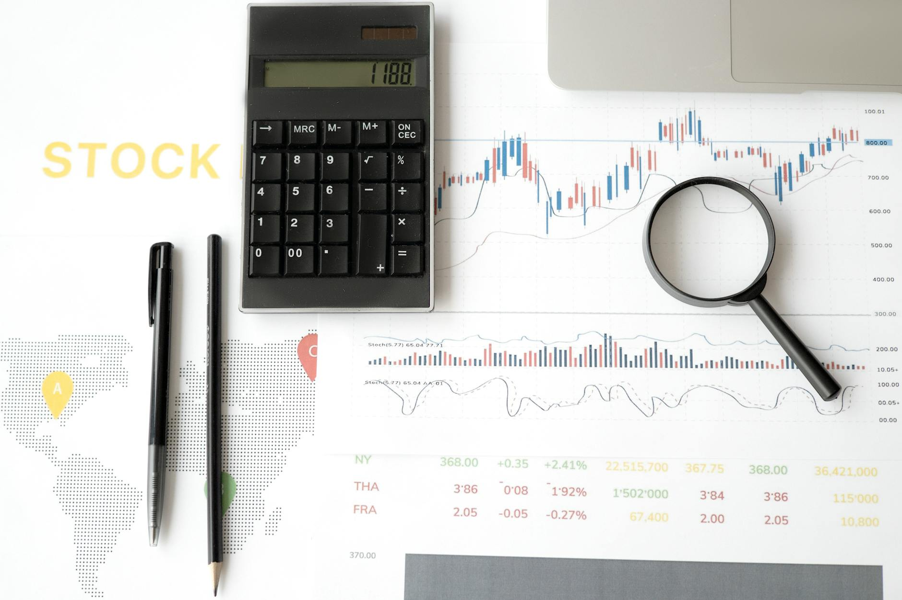

TL;DR
Beginner investors can unlock ETF potential through optimization. Prioritize low fees, diversify effectively, and regularly check performance. Start with named ETFs and consider a balanced allocation like 60% stocks, 30% bonds, 10% cash.
Who Should Optimize Their ETF Portfolio?
This article is for beginner investors and retirement savers looking to enhance their ETF portfolios. Many new investors make the mistake of thinking optimization is only for advanced users.
In reality, even small improvements can significantly impact long-term returns. If you’ve started investing with popular ETFs like the SPDR S&P 500 ETF (SPY) or Vanguard Total Stock Market ETF (VTI), it's essential to get the basics right.
Why a Simple ETF Portfolio Can Underperform
Many beginner investors underestimate various factors that can lead to suboptimal ETF performance. One significant issue is high fees. Consider the Vanguard 500 Index Fund, which has an expense ratio of just 0.03%.
In contrast, some other funds might charge over 1%. While the difference of a few basis points might seem negligible, it compounds over time. For example, if you invest $10,000 with a 1% expense ratio versus a 0.03% ratio, after 30 years at an average annual return of 7%, your portfolio could be worth approximately $76,123 with Vanguard but only about $57,308 with the higher fee fund.
That’s a difference of nearly $19,000 simply due to fees.
Poor diversification also poses an inherent risk. A portfolio heavily weighted in sector-focused ETFs can elevate volatility. For instance, if you invested solely in a tech sector ETF, and the market experiences a downturn—like the 2021 tech sell-off—you could face considerable losses.
In 2022, the tech-heavy NASDAQ-100 Index fell by about 30%, dramatically affecting portfolios concentrated in that sector. If your entire $50,000 investment was in a tech ETF during that downturn, a 30% drop would mean a loss of $15,000.
Additionally, having too few ETFs can lead to this concentration risk. For example, an investor might hold only two ETFs—one focused on U.S. stocks and another on international markets—leaving them vulnerable to localized economic issues.
The Core Principles of a Winning ETF Strategy

To successfully optimize your ETF portfolio, adhere to some core principles that can elevate your investment strategy. Start with asset allocation: don’t put all your eggs in one basket.
A typical approach might involve allocating 60% to U.S. stocks, 30% to international stocks, and 10% to bonds. For instance, if your portfolio is valued at $50,000, this allocation translates to $30,000 in U.S.
stocks, $15,000 in international stocks, and $5,000 in bonds.
Next, prioritize low expense ratios. ETFs with high fees can significantly hinder your overall returns. For example, consider two ETFs: one with a 0.1% expense ratio and another with a 1.0%. Over a 20-year investment horizon, assuming a 7% annual return, the higher-fee ETF could cost you around $20,000 in lost gains compared to the lower-fee option.
Additionally, remember to regularly rebalance your portfolio. Set a recurring reminder to evaluate your asset mix, ideally every six months or at least once a year. If your U.S. stocks outperform and you find that they now represent 70% of your portfolio, selling some of those shares and reinvesting in bonds or international stocks can help you maintain your desired risk level and protect profits.
Lastly, focus on tax efficiency. Utilize tax-advantaged accounts, such as IRAs or 401(k)s, whenever possible to maximize your investment gains. Holding high-growth ETFs in these accounts can shield you from immediate tax burdens.
A Real Scenario for Beginner Investors
Imagine a beginner investor named Sarah, who has just graduated and landed her first job. With a monthly budget of $100 set aside for investing, Sarah decides to take a proactive approach, rather than waiting to accumulate a more substantial amount.
Each month, she allocates $60 to a broad market ETF like the Vanguard Total Stock Market ETF (VTI), which offers exposure to a wide range of U.S. companies. For the next $20, she chooses a dividend ETF, such as the Schwab U.S.
Dividend Equity ETF (SCHD), which pays out quarterly dividends, providing her with a potential income stream.
The remaining $20 is kept in cash, enabling her to weather market fluctuations without stress. For instance, if there’s a significant market dip, she has cash on hand to potentially buy more shares at a lower price or simply avoid panic selling.
At the end of the year, she will have contributed $1,200, with $720 in the broad market ETF, $240 in the dividend ETF, and $240 in cash. This gradual accumulation starts to create real growth; if her broad market ETF averages a 7% annual return, after one year, that portion alone could grow to approximately $770.
Beyond the numbers, Sarah gains invaluable experience in following the markets and understanding her investments. She tracks her portfolio’s performance quarterly, noting the ups and downs — a necessary part of investing but often challenging for newcomers. This consistency not only instills a disciplined habit but also fosters a sense of ownership over her financial future.
Mistakes That Can Trip Up Your ETF Performance
Common mistakes can severely hinder the performance of your ETF investments. One major pitfall is market timing—many investors try to anticipate market movements, aiming to buy low and sell high.
For example, during the COVID-19 market crash in March 2020, investors who panicked and sold their holdings may have locked in significant losses. A study showed that missing just the 10 best trading days over a decade could reduce returns by nearly half, illustrating that attempting to time the market often results in missed opportunities.
Another frequent oversight is the neglect of dividends. Many ETFs offer dividend distributions that can significantly boost overall returns if reinvested. For instance, if you hold an ETF that returns 2% in dividends annually and you decide not to reinvest, your compounding growth could drop dramatically over time.
If that same ETF were instead reinvested over 10 years, an initial investment of $10,000 could potentially grow to approximately $15,000, compared to only $12,000 without reinvestment.
Additionally, some investors focus solely on historical performance, disregarding the importance of diversification. For instance, concentrating all your investments in technology ETFs could expose you to greater risk.
Next Steps: Enhancing Your ETF Knowledge
As you start optimizing your ETF portfolio, consider delving deeper into educational resources. Look for reputable books like 'The Little Book of Common Sense Investing' by John C. Bogle.
Online courses on platforms like Coursera or Udemy offer structured lessons specifically on ETFs. Networking with other investors on forums or local meetups can also provide insights and tips.
Remember, investing is a discipline where knowledge truly empowers success.
FAQ
What are ETFs and why should I consider them?
ETFs, or Exchange-Traded Funds, are investment funds traded on stock exchanges, much like stocks. They typically hold a diversified portfolio of assets, making them appealing for investors looking for lower risk and easier market entry.
How often should I review my ETF portfolio?
Ideally, you should review your ETF portfolio every six months to ensure your asset allocation aligns with your investment goals and market conditions.
This article is reviewed for practical usefulness and updated when information changes.
Next step
Use the article as a decision point, not just reading material. Your next system matters more than more browsing.
Search more articles
Find related tools, workflows, and guides.
Photo credits
- Photo 1: RDNE Stock project via Pexels
- Photo 2: www.kaboompics.com via Pexels
- Photo 3: Hanna Pad via Pexels
- Photo 4: AlphaTradeZone via Pexels
- Photo 5: Leeloo The First via Pexels